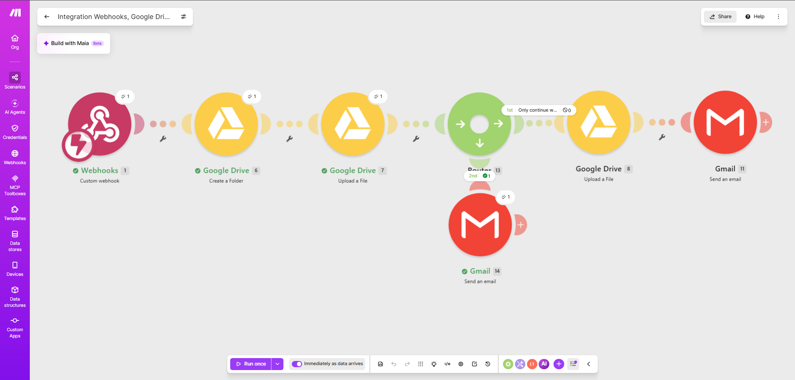
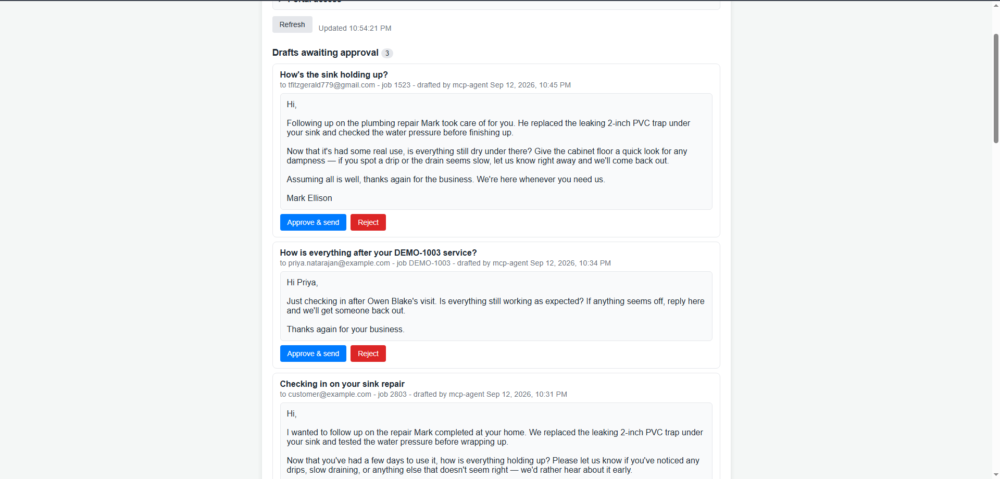
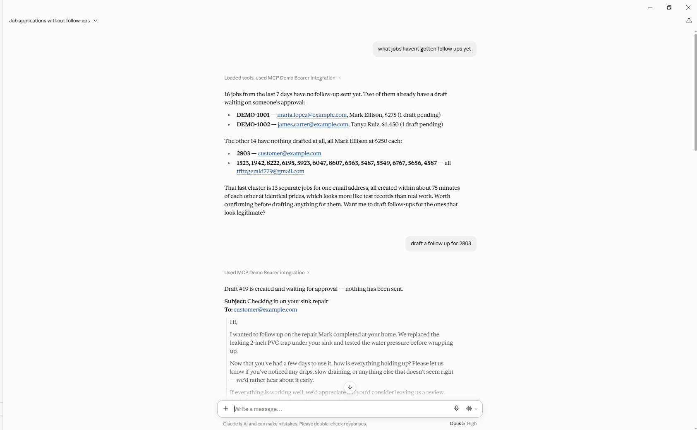

I build automation and backend systems that use LLM APIs. Most of that work has been for small
businesses with one specific job they wanted taken off their plate: a field services company drowning
in end-of-day paperwork, a bookkeeper typing invoices into a spreadsheet by hand. More recently I've
been writing automated tests that check whether AI-generated code actually works.
A lot of what I do is figuring out where the model belongs in a system and where it doesn't. It's good
at turning a technician's shorthand into a paragraph a customer can read. It should not be the thing
deciding what a customer owes. Below are three projects where that distinction mattered.
I'm looking for a full-time applied AI role.
Projects
01
Field Dispatch Pipeline, Made Usable by Agents
Built for a field services client, then opened up to AI agents
·Live portal·Source
A technician finishes a job and fills out one form on their phone: job ID, customer email, price,
a few lines of notes, and photos. The server rewrites the notes into something a customer can read,
puts it in a PDF, records the job in Postgres, and hands the PDF and photos to a Make.com scenario
that files them in Google Drive and emails the customer. The owner used to spend an hour or two every
evening doing this by hand. Now it takes about five minutes a day.
The second half is what I added on top. The job system is exposed to AI agents through an
MCP server with six tools:
look up a job, pull a customer's history, list what was completed today, find customers who haven't
had a follow-up this week, list follow-ups, and draft a follow-up email. Five of those read. The one
that writes can only create a draft. Every draft lands in a review queue where a person approves or
rejects it, and only approval sends. The agent can look and suggest. A human decides.
The tech's side. One form on a phone, and the customer-ready summary comes back in a few seconds.

Where the PDF and photos go. Make.com files them in Drive and emails the customer.

The human side. Drafts written by the agent wait here until a person approves them.
Try it with your own Claude
The tools are served over HTTP, so you can connect from Claude.ai, Claude Desktop, or Claude Code
without installing anything. The data is seeded demo data, not the client's customers. This is a
public demo token; anything you draft shows up in my review queue and goes nowhere until I approve it.

Claude Desktop connected over MCP: it finds the customers missing a follow-up, drafts one, and reports that a person has to approve it.
Claude.ai or Claude Desktop: Settings, then Connectors, then Add custom connector.
Paste the URL above as the server URL. No other fields needed.
Claude Code:claude mcp add --transport http field-dispatch <the URL above>
Then ask things like "Which customers haven't gotten a follow-up this week?",
"Show me Maria Lopez's history", or
"Draft a friendly follow-up for job DEMO-1006 asking whether the toilet is still running."
Try asking it to send the email, delete a job, or change a price. It can't. There's no tool for
any of that, and the database role it runs under would refuse anyway.
Notes on how it's built
The model never sees the numbers. Job ID, price, and customer email go straight from the form
fields into the PDF. The only thing sent to OpenAI is the notes field. This came from a real
problem: when the model handled the whole document, it would occasionally get a detail wrong on
something the customer was about to read.
Every job carries a status that advances through each stage: received, summarized, PDF stored,
customer notified. The row is inserted first, so a duplicate job ID is rejected before the paid
API call, and a failed email can be retried without redoing the earlier steps. Before this, a
failure partway through left a PDF on disk, no database row, and a bill from OpenAI.
PDFs are rendered in memory and stored in Postgres as bytes rather than written to disk. That's
what let the whole thing move to Vercel's serverless functions, which have no writable filesystem.
Two separate credentials with two separate ceilings. The portal key unlocks the web app, including
approving follow-ups. The MCP bearer token unlocks the six tools and nothing else. Rotating the
token in Vercel cuts off every connected agent at once.
The MCP server connects to Postgres as its own role that has SELECT on every table and
INSERT on the follow-ups table only. Even if the tool layer had a bug, the database
would refuse an update or delete. There's a test that asserts this.
The same tool definitions are served two ways: over stdio for a local Claude Code or Claude
Desktop, and over MCP's Streamable HTTP transport at /mcp on the deployed app. The
HTTP version is stateless, one JSON response per request, because that's what a serverless host
can actually serve.
All the SQL lives in one data-access module shared by the web app and the MCP server, so a tool and
an API route answering the same question run the same query.
Input validation closed a real hole. The job ID used to go straight into a file path, so a value
like ../x could escape the uploads folder. IDs are now restricted to a safe character
set, and the errors the API returns never include raw database messages.
02
Multiplayer Game Server Backend & Plugin Environment
Website and API for a game server I ran
·Live site
Players sign in with Steam, link their Discord, buy things from a store, and open support tickets.
There's an admin side for handling those tickets and a live status readout for the server itself.
The part I like most is the connection to the game. A C# plugin running inside the server calls the same
API, so when someone buys a rank on the website they have it in game on their next command. Nobody has
to be around to grant it.
Spending currency happens inside a transaction that locks the player's row with
SELECT ... FOR UPDATE first. Players worked out that spamming the buy command could get
them two items for one payment. Locking the row before the balance check ended that.
The endpoints the game plugin calls return plain strings like SUCCESS and
INSUFFICIENT_FUNDS instead of JSON. Parsing JSON inside the plugin was more trouble than
it was worth. The browser side of the same database gets normal JSON responses.
Access to a kit is checked when the player redeems it, not when they buy it. Rank kits look at the
player's ranks, Discord kits require a linked account, and Steam group kits check the group live.
Steam's API returns nothing for private profiles, so there's a fallback that reads the group's member
list XML instead.
One Discord account can't be linked to two Steam accounts. People were unlinking and relinking to
claim the Discord reward on a second character, so the server checks for an existing link before it
saves.
Sessions are stored in Postgres rather than in memory. The free hosting tier restarts the container
on its own schedule and everyone was getting logged out when it did.
Tickets are threaded messages with a status that changes based on who replied last, plus guards so
nobody can post to a closed ticket. It's ordinary relational modeling, but I had actual users filing
actual tickets, which is a good way to find out what you got wrong.
Upload a photo or scan of an invoice and it comes back as a spreadsheet row: vendor, invoice date, due
date, tax, and total. The browser converts the file, a serverless function sends it to GPT-4o, and the
result gets appended to the client's Google Sheet.
The interesting part isn't the extraction, which mostly just works. It's everything I do to the answer
before it's allowed into the sheet.
GPT-4o visionNodeVercel serverlessGoogle Sheets API
Notes on how it's built
I ask for strict JSON and describe the exact format of every field, then check all of it again in
code anyway. The prompt gets it right most of the time. The code makes it right the rest of the time.
Amounts go through a parser that strips currency symbols and handles European decimals. A German
invoice came back as "44,90 €", which plain parseFloat reads as 44. Errors
like that don't announce themselves. They just sit in the books being wrong.
Dates get converted to YYYY-MM-DD no matter what format they arrive in. If a date is
genuinely unreadable I pass the raw text through instead of guessing, so it's obvious in the sheet
that something needs a look.
Every row is written with the status "Pending Approval." Reading an invoice quickly is worth doing
automatically. Recording it is not something I wanted happening without a person seeing it.
The Google service account key gets cleaned up when it loads, since hosting providers tend to mangle
multi-line environment variables. This broke my deploys twice before I stopped fighting it and just
normalized the key.
Experience
AI Code Engineering, Roblox / Lua — Alignerr
APR 2026 — PRESENT · Contract, remote
Wrote automated evaluations in Lua that check AI-generated code inside a 3D game environment, replacing
manual pass/fail review with tests that give the same answer every time.
Built reference implementations of game mechanics to score model output against, so there was something
concrete to compare to instead of a judgment call.
Ran rubric evaluations on model-generated Roblox Studio builds over several months with lots of good reviews.
Founder / Automation Engineer — Aetheri Web Design LLC
JAN 2024 — PRESENT · Columbus, OH
Built and shipped the job completion pipeline described above for a field services client, cutting
their daily admin from one to two hours down to a few minutes.
Opened that same system to AI agents through an MCP server with read tools and one draft-only write,
backed by a least-privilege database role and a human approval queue, then hosted it on Vercel so
anyone can connect their own Claude and try it.
Stopped fabricated details from reaching customer documents by routing job ID, price, and customer
email straight from the form to the PDF instead of through the model, and added validation and
fallbacks around the parts that stayed unreliable.
Scoped, priced, and delivered custom automation for several small business clients, which mostly meant
translating what someone described in plain English into something that runs.
Connected LLM APIs to the SaaS tools and databases clients were already using.
Associate of Applied Science, Software Development — Columbus State